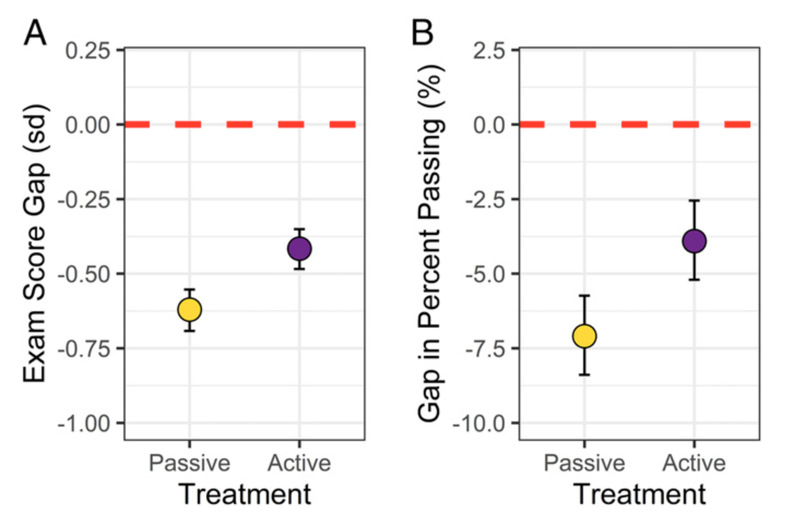
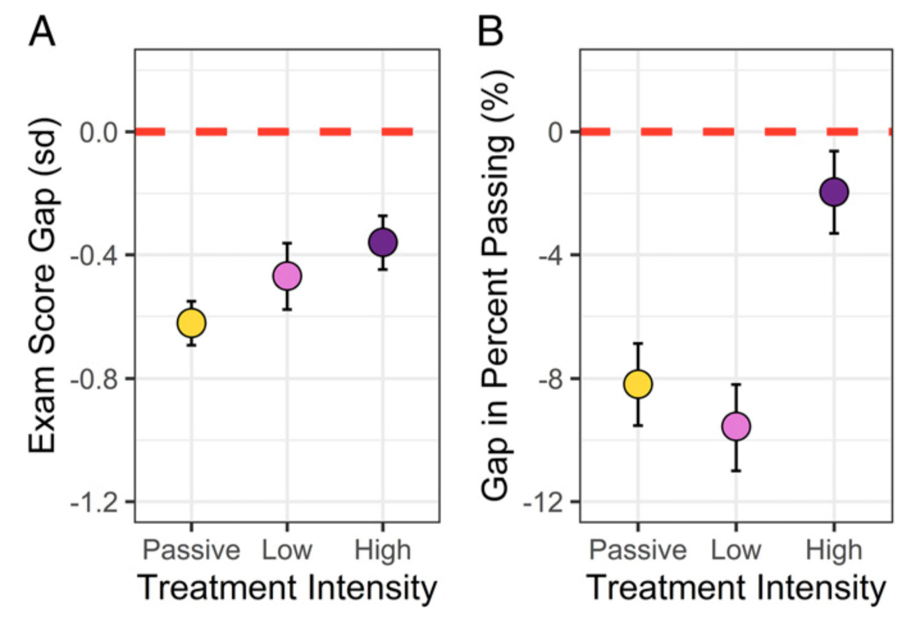

Active Learning Narrows Achievement Gaps
Theobald, E. J., Hill, M. J., Tran, E., et al. (2020). Proceedings of the National Academy of Sciences, 117(12), 6476--6483.
What it says
- This meta-analysis incorporated data from ~50,000 students across 33 studies to examine the impact of active learning on reducing achievement gaps in college STEM courses for underrepresented minority students and students from low-income families
- As shown in the first figure below, the analysis finds that active learning is significantly effective at reducing these gaps both for exam grades and overall passing rate
- However, the results also underscore the variability in this benefit. As the second figure makes clear, "low-intensity" active learning (< 33% of class time) is only marginally better than traditional lecture instruction.
 {: style="width: 80%; margin-left: auto; margin-right: auto;"}
Overall findings. For both exam scores (panel A) and passing rate (panel B), this analysis shows that active learning substantially reduces achievement gaps for minoritized groups in STEM (Figure 1 from Theobald et al., 2020).**
 {: style="width: 80%; margin-left: auto; margin-right: auto;"}
Results when active learning is broken down into low or high intensity. Although benefits in the exam score studies show a linear trend with active learning intensity, the studies of passing rate suggest that only high intensity active learning brings about a reduction in the achievement gap (Figure 4 from Theobald et al., 2020).**
What we might learn from it
- This work reinforces the well-established understanding that active learning techniques should be preferred over traditional lectures. Not only has active learning been shown to improve course performance broadly (e.g., Freeman et al., 2014), the present result highlights the capacity for active learning to yield more equitable outcomes.
- In the discussion, the authors address the issue of variability across multiple "active" classrooms. They hypothesize that the combination of (1) active learning focused on deliberate practice and (2) inclusive teaching emphasizing belonging and a growth mindset will lead to the strongest achievement gap reductions
- From a research standpoint, it remains to be seen exactly how much explanatory power this hypothesis will have. But for practitioners, there is little reason not to make establishing an inclusive and supportive learning community a priority alongside high quality active learning.